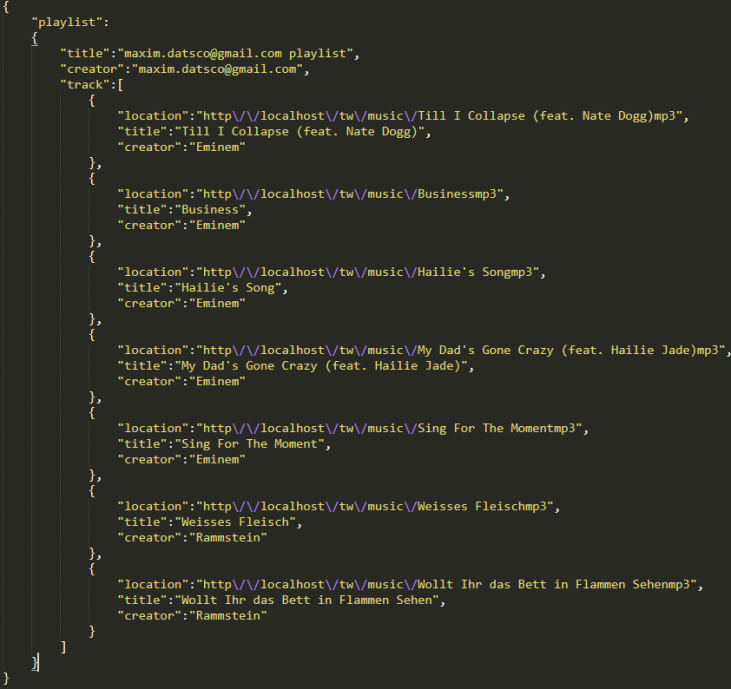

Raport - Music Review Manager
- Login/Register
- Votare
- Adaugare comentariu
- Statistici
- Exportare/Importare playlist
- Adaugare melodie in playlist
- Ascultare melodie
- Dațco Maxim
- Miron Teodor-Cosmin
1. Login/Register

Pentru a te conecta sunt necesare email-ul si parola unui cont valid.

Pentru crearea contului ai nevoie de un email unic si o parola cu mai mult de 6 caractere.
2. Votare
Dupa ce un client logat apasa butonul din dreapta unei melodii apare un fel de menu. Pe ecran apar 3 optiuni. Add/Remove - adaugarea unei melodii la playlist-ul clientului/stergerea din playlist. Vote/Unvote - votarea/reluarea votului unei melodii si Comment - scrierea unui commentariu la o melodie specifica. In caz de Vote sau Unvote la numarul voturilor a unei melodii este adaugat un vot sau scazut.
3. Adaugare comentariu
Dupa ce un client logat apasa butonul din dreapta unei melodii apare un fel de menu. Pe ecran apar 3 optiuni. Add/Remove - adaugarea unei melodii la playlist-ul clientului/stergerea din playlist. Vote/Unvote - votarea/reluarea votului unei melodii si Comment - scrierea unui commentariu la o melodie specifica. In caz de Comment utilizatorul va fi redirectionat catre o pagina a melodiei specificate, unde va putea vizualiza si adauga comentarii.
4. Statistici
Pentru descarcarea statisticilor sunt 2 optiuni csv si pdf apasand pe una dintre ele se va descarca fisierul dorit.
5. Exportare/Importare playlist
La profilul oarecarui user orice alt user poate exporta playlist-ul lui sau al sau, apasand "Export playlist". Dupa ce este apasat butonul dat. Va fi download-at un fisier intr-un format specific.
La profilul utilizatorului curent se poate importa un playlist dintr-un fisier json valid, apasand "Choose file" si dupa "Load selected file". Dupa ce este apasat butonul dat, la playlist-ul utilizatorului vor fi adaugate melodile care nu se afla in playlist-ul lui.
5.Adaugare melodie in playlist

Dupa ce un client logat apasa butonul din dreapta unei melodii apare un fel de menu. Pe ecran apar 3 optiuni. Add/Remove - adaugarea unei melodii la playlist-ul clientului/stergerea din playlist. Vote/Unvote - votarea/reluarea votului unei melodii si Comment - scrierea unui commentariu la o melodie specifica. In caz de Add sau Remove melodia specificata apare sau dispare din playlist-ul utilizatorului.
6.Ascultare melodie
Pentru ascultarea melodiei este un buton de play in partea stanga a fiecarei melodii sau butoanele din josul pagini.